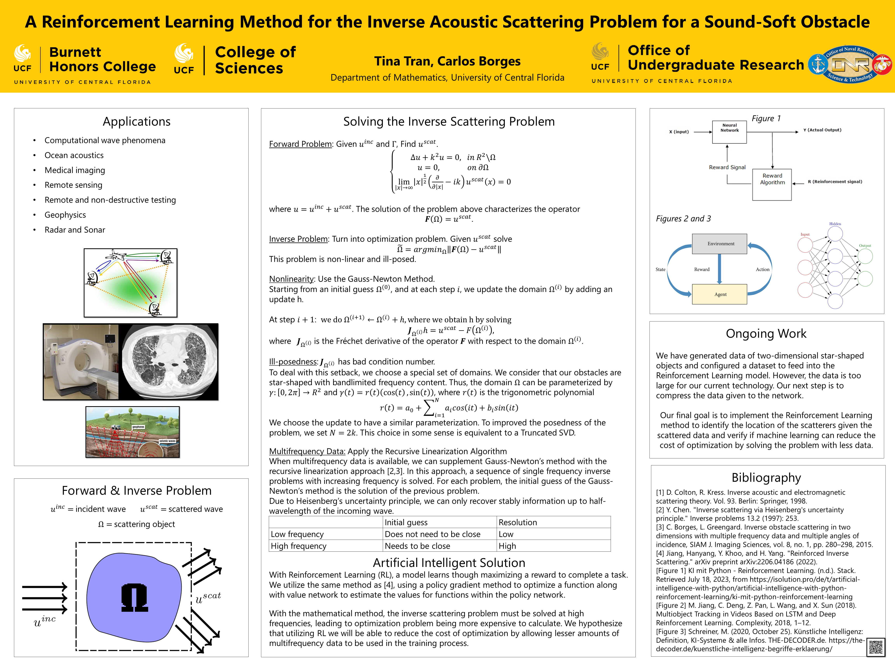

Research
OG-LMM: Object Grounding Large Multimodal Model
Research Lab Director: Mubarak Shah, Graduate Student Mentor: Joseph Fioresi
Won second place in The Second Perception Test Challenge for the Grounded Video
Question-Answering Task @ ECCV 2024. Presented live at the ECCV workshop in Milan, Italy.
Link to information about the challenge and our paper.
Link to our video submission.
Link to article
written about my trip.
A Reinforcement Learning Method for the Inverse Acoustic Scattering Problem for a Sound-Soft Obstacle
Faculty Mentor: Dr. Carlos Borges, Assistant Professor at the UCF Department of Mathematics.
Submitted and accepted to the Summer Undergraduate Research Fellowship Track 1, and presented at the Summer Poster Showcase 2023 (see poster below). Presented at FURC 2024. Continuation of Directed Independent Research in the Department of Mathematics.
Expandable Music Recommendation using a Joint Embedding Space
Thesis Chair: Dr. Rickard Ewetz, Associate Professor at the UCF Department of Electrical Engineering and Computer Science.
Honors Undergraduate Thesis (HUT) Program. Recepient of the HUT Scholarship Fall 2024. Presented at FURC 2024 and
UCF's Student Scholar Symposium 2024.
Link to the paper on STARS Database.
Link to the code.